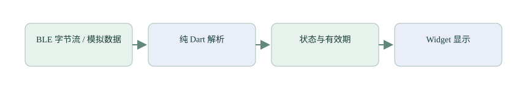

支线二：从上位机到 Flutter App
先用模拟数据建立页面与解析器，再把串口或 BLE 接入服务层，最后处理权限、存储和真实设备状态。
知识：从 MCU 主循环切换到事件驱动界面
App 页面由状态描述，状态变化触发重建。Dart 的 Future 表示一次异步结果，Stream 表示连续事件；async/await 不等于创建一个 MCU 任务。UI 线程中的长计算仍会影响交互。先理解 Widget、State、生命周期和事件订阅，再选择更复杂的架构。

独立实验：不连接硬件的仪表盘
在独立 Flutter 实验目录使用系统工具创建工程，首先显示计数器，然后用周期模拟数据替换按钮输入。以下组件假设已导入 material.dart，在 MaterialApp 的页面中使用；不要每次 build 都创建定时器或 BLE 订阅。
Flutter / Dart 组件片段 · 在独立实验项目中使用
class CounterPanel extends StatefulWidget {
const CounterPanel({super.key});
@override
State<CounterPanel> createState() => _CounterPanelState();
}
class _CounterPanelState extends State<CounterPanel> {
int count = 0;
@override
Widget build(BuildContext context) => Column(children: [
Text('Count: $count'),
ElevatedButton(onPressed: () => setState(() => count++),
child: const Text('Add')),
]);
}下一步把通信服务换成模拟 Stream，依次发送正常、无效、超时和断连事件。页面应该依状态变化，而不是直接假设“有一个数字就是正常测量”。组件销毁时取消订阅，异步回调更新页面前检查生命周期。
上位机与手机共用协议规则
电脑端可先编写简单串口调试工具：配置端口、收发原始字节、调用同一状态机、画曲线和保存日志。迁移到 BLE 后，保留帧格式与解析测试，替换传输适配层。文本与二进制、分包与消息、有效数据与历史数据都要继续分开。
纯 Dart 编解码片段 · 可作为单元测试输入
final bytes = Uint8List.fromList([0x34, 0x12]);
final view = ByteData.sublistView(bytes);
final value = view.getUint16(0, Endian.little); // 0x1234
// 协议字段逐项读取，先检查长度；不要假定缓冲偏移对齐。
// 需要 import 'dart:typed_data';BLE 的连接、服务发现、特征订阅、消息解析各有失败状态。重连要取消旧订阅，再建立新订阅；恢复传输完成与一次 write 完成不能共用一个成功标志。
项目实践：按现有版本运行与阅读
命令参考 · 教程编写不自动执行安装或短信发送
cd app/flutter_app
flutter pub get
flutter analyze --no-pub
flutter test --no-pub
flutter build apk --debug --no-pub项目锁定文件给出依赖版本，BLE 插件为 FlutterBluePlus 1.x 系列，当前锁定 1.36.8；不要直接照搬最新版 2.x 文档更改接口。先读 app/flutter_app/lib/ble_service.dart、app/flutter_app/lib/ble_protocol.dart，再读 dashboard_page。更详细的现状见 app/flutter_app/README.md。
权限、存储与告警
扫描/连接权限依 Android 版本与 API 使用场景不同，拒绝权限要有可恢复提示。体重、年龄、联系人等持久化与 BLE 临时状态分别管理。短信要检查配置和权限，倒计时可取消；测试使用模拟 MethodChannel。当前 App 的发送返回表示请求已提交，实际送达仍需接收手机确认。
- 用模拟数据覆盖界面状态，不依赖手表才能跑全部测试。
- 重复进入退出页面，检查是否出现重复监听或销毁后 setState。
- 验证断连清除实时血氧、累计睡眠不重复相加，以及空联系人不发送短信。
检查理解
参考与继续阅读
参考用于核对概念和接口；不同系列、库版本与开发板的参数不可直接互换。课程按本仓库现状说明项目，完整资料索引见 来源与版本。